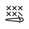

<section class="topbar">
  <div class="logo">
    <a href="#"></a>
  </div>
  <span class="title">Patrones Punto de Cruz</span>
</section>

<nav class="menu">
  <button class="toggleButton" onclick="this.nextElementSibling.classList.toggle('showing')">
    <i class="las la-bars"></i>
  </button>
  <ul>
    <li>
      <a href="carga-nuevo">Carga nuevo patrón</a>
    </li>
    <li>
      <form role="search">
        <input type="search" role="searchbox" />
        <i class="las la-search"></i>
      </form>
    </li>
    <li class="sliders">
      <a class="show" href="javascript: void(0)" (click)="showFilter()">
        <i class="las la-sliders-h"></i>
      </a>
    </li>
  </ul>
</nav>
